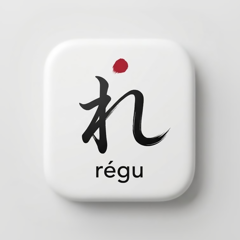
régu
コピーした文字を、いつもの形にそろえる
iPhone
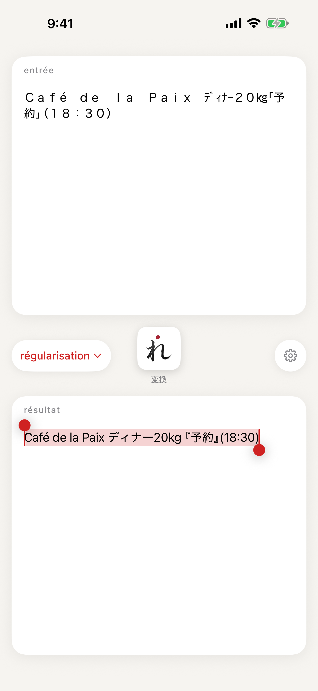
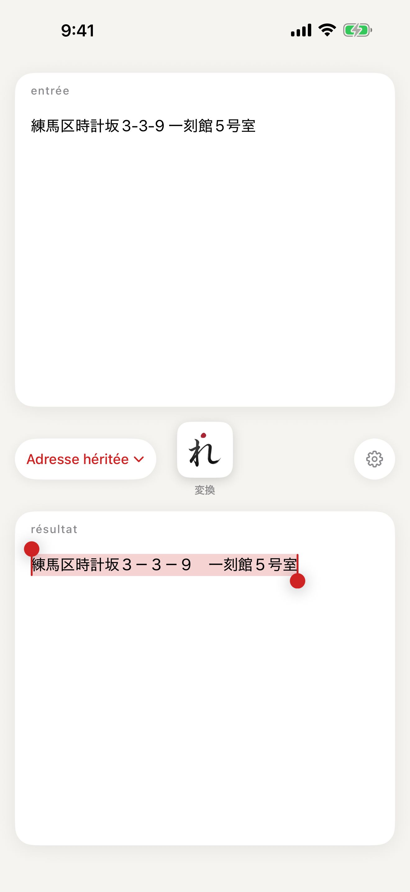
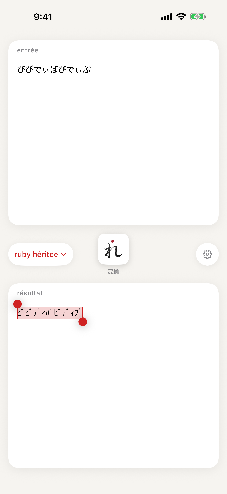
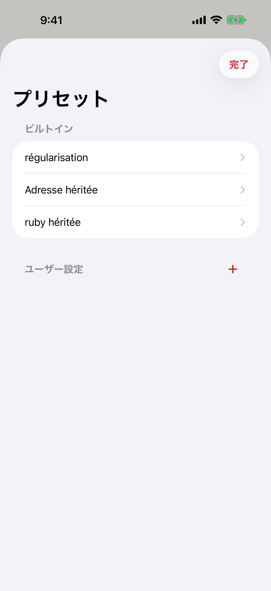
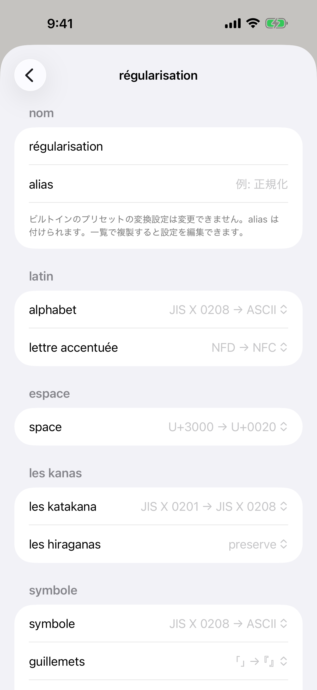
iPad
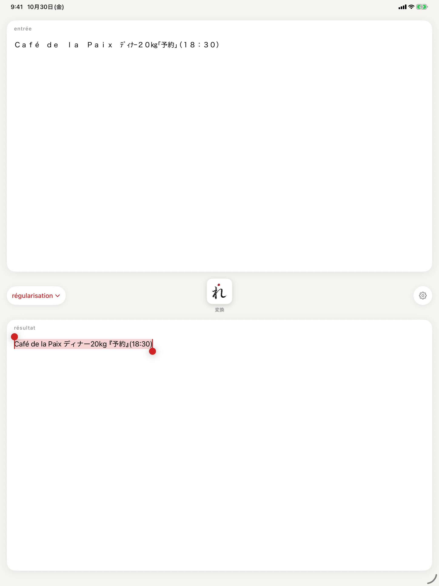
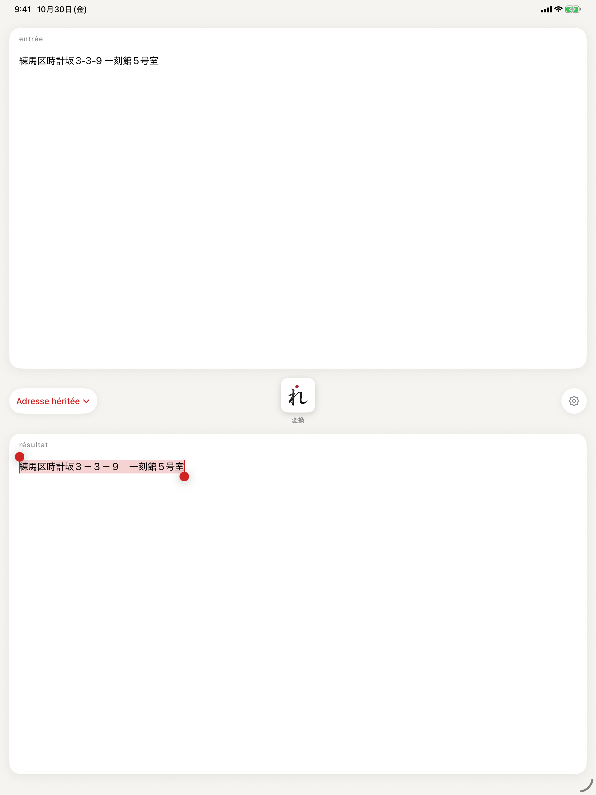
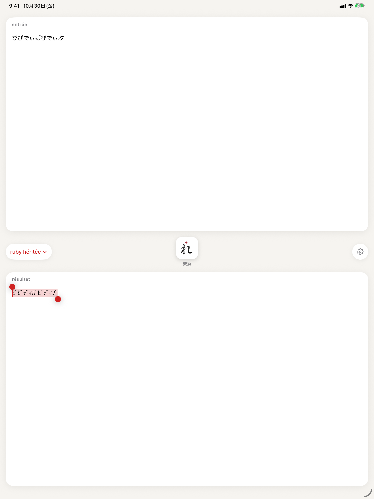
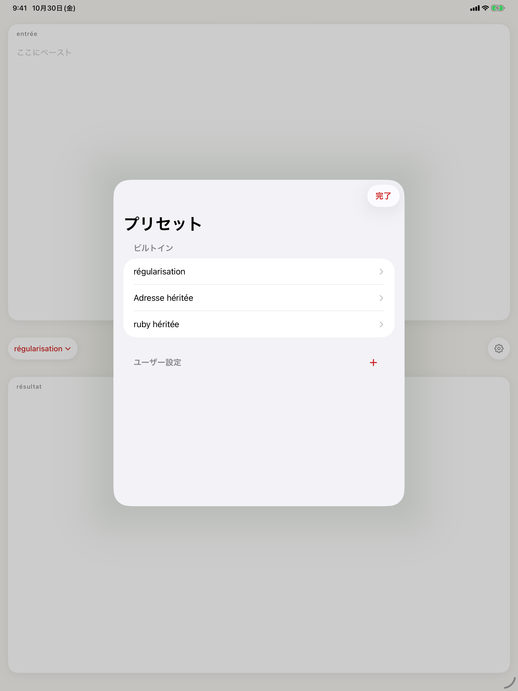
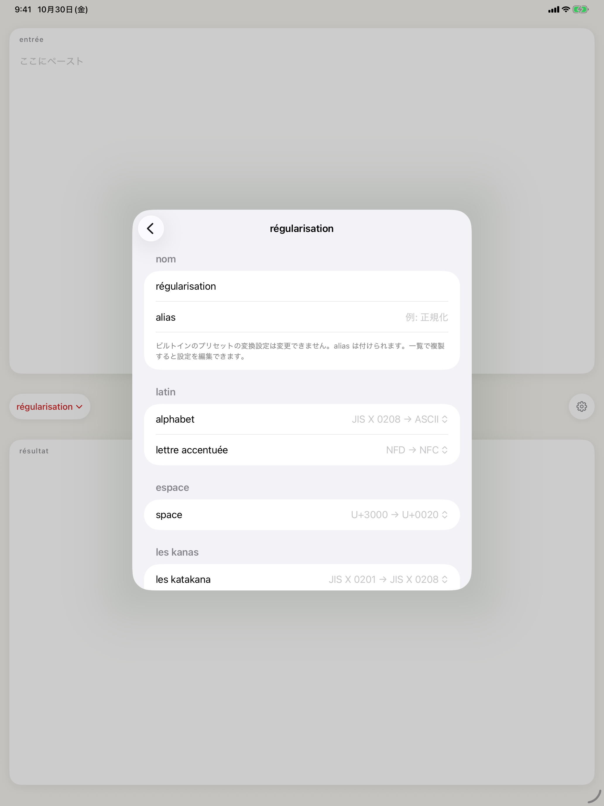
régu(レギュ)は、コピーした文字列を、あらかじめ決めた規則で一度にそろえるアプリです。
使い方は、文字列をコピーして régu を開くだけ。régu は前面に来るたびにクリップボードを読み、選んでいるプリセットで変換し、結果をクリップボードへ書き戻します。あとは元のアプリに戻って貼り付けるだけです。結果は全選択された状態で表示されるので、確かめてからコピーし直すこともできます。régu 自身が書き戻した文字列を、もう一度変換することはありません。
変換できる 10 項目
・英数字 — 全角 ⇄ 半角(ASCII)
・アクセント — 合成済み(NFC)⇄ 分解(NFD)
・空白 — 全角スペース ⇄ 半角スペース(1 個 / 2 個)
・カナ — 半角カナ ⇄ 全角カナ
・ひらがな — ひらがな ⇄ カタカナ、入れ替え
・記号 — 全角 ⇄ ASCII、Windows の文字コード(CP932)に合わせた変換
・鉤括弧 — 「」⇄『』
・単位 — ㎏ ㎝ ㎡ などの SI 単位の組文字 ⇄ kg cm m²
・HTML エンティティ — é ⇄ é
・URL エンティティ — %C3%A9 ⇄ é
3 つの既定のプリセット
・régularisation — 全角の英数字・記号を半角に、半角カナを全角に、全角スペースを半角に、アクセントを合成済みに。ふだん使いの整形に。
・Adresse héritée — 英数字・記号・スペースを全角に、カナを半角に。全角しか受け付けない古い入力欄の住所に。
・ruby héritée — ひらがなを半角カタカナに。半角カナのふりがな欄に。
自分のプリセット
10 項目を組み合わせて、名前を付けたプリセットをいくつでも作れます。メイン画面のチップから、すぐに切り替えられます。
通信しません
régu にはネットワーク通信を行なうコードがありません。クリップボードの内容が端末の外へ送られることはありません。解析・広告の SDK も使っていません。
iPhone と iPad に対応しています。
新機能
初回リリースです。
キーワード(検索用・ストアには表示されません)
régu
Normaliser le texte copié
iPhone
iPad
régu remet en ordre, en une seule fois, le texte que vous avez copié, selon des règles choisies à l’avance.
Copiez un texte, puis ouvrez régu. À chaque passage au premier plan, régu lit le presse-papiers, le convertit avec le préréglage sélectionné et y replace le résultat. Il ne reste qu’à revenir dans l’app d’origine et à coller. Le résultat s’affiche entièrement sélectionné : vous pouvez le vérifier avant de le copier à nouveau. régu ne reconvertit jamais le texte qu’il vient lui-même d’écrire.
10 conversions
• Lettres et chiffres — pleine chasse ⇄ demi-chasse (ASCII)
• Accents — composés (NFC) ⇄ décomposés (NFD)
• Espaces — espace idéographique ⇄ espace (une ou deux)
• Kana — katakana demi-chasse ⇄ pleine chasse
• Hiragana — hiragana ⇄ katakana, ou permutation
• Symboles — pleine chasse ⇄ ASCII, ou selon le jeu de caractères Windows (CP932)
• Crochets japonais — 「」⇄『』
• Unités — symboles d’unités SI composés comme ㎏ ㎝ ㎡ ⇄ kg cm m²
• Entités HTML — é ⇄ é
• Encodage URL — %C3%A9 ⇄ é
Trois préréglages fournis
• régularisation — lettres, chiffres et symboles en demi-chasse, kana en pleine chasse, espaces idéographiques en espaces, accents composés. Pour le nettoyage de tous les jours.
• Adresse héritée — lettres, chiffres, symboles et espaces en pleine chasse, kana en demi-chasse. Pour les anciens formulaires japonais qui n’acceptent que la pleine chasse.
• ruby héritée — hiragana en katakana demi-chasse. Pour les champs de lecture (furigana) en demi-chasse.
Vos propres préréglages
Combinez les 10 conversions et créez autant de préréglages nommés que vous le souhaitez. Changez-en d’un geste depuis l’écran principal.
Aucune connexion réseau
régu ne contient aucun code réseau. Le contenu du presse-papiers ne quitte jamais votre appareil. Aucun SDK d’analyse ni de publicité.
Pour iPhone et iPad.
Nouveautés
Première version.